On 9 May 2026, Venerable Guoqing (果清律師), a Vinaya monastic master, gave a Dharma lecture on “Buddhist Ethics of the 21st Century” — a talk that had been long in preparation, and that brought together Buddhist communities of different traditions.

Event details
The lecture ran from 3:00 PM to 4:30 PM on 9 May 2026 at Tung Lin Kok Yuen (東蓮覺苑), 2495 Victoria Dr., Vancouver, B.C., Canada V5N 4L1. The poster titles the lecture “Buddhist Ethics for the Twenty-First Century” (21世紀下的佛教道德觀) and the speaker is Venerable Vinaya Master Guo Qing, a respected monk in the Vinaya tradition, especially in Taiwan and worldwide, with invitations coming from all over, to give lectures on all topics, ranging from Vinaya to Buddhist ethics and more. He is a famous master but is very humble, and his spirit is something to be learned from.
The organizers are Chan and Tea Culture International (加拿大國際禪茶文化聯合會), the Dakinava Buddhist Educational and Cultural Society (光明山南林寺), and Tung Lin Kok Yuen, Canada Society (加拿大東蓮覺苑). Registration was by scanning the QR code on the poster or signing up via WhatsApp.
How the lecture came about
The project had been worked on for a long time by the President and Vice-President as well as various volunteers. While Venerable Tiankong (天空法師) was in Taiwan attending the Rains Retreat at Yuantong Temple (圓通寺), where he stayed, Venerable Daojing (道憬法師) formally requested the monks of Yuantong Temple to give a Dharma lecture on this topic. The topic, “Buddhist Ethics of the 21st Century,” was decided in discussion with the nuns of Nanlin Temple (南林寺) in Mission, British Columbia, Canada.
Different traditions, one community
With encouragement from Venerable Daojing, much work was put in before the monks arrived, including arranging food, good accommodation and transport. The occasion was a great demonstration of community, hard work and perseverance, shared between Buddhist communities of different traditions: Nanlin Temple follows the Theravada tradition, with different dress from the Chinese Buddhist tradition, and its members are vegetarians.
The lecture
During the event, many people listened attentively to Venerable Guoqing’s teachings. Everybody was pleased and followed the Dharma.
Tea, thanks and gift bags
On the day of the event, Venerable Daojing spent about two hours preparing ahead of time, with volunteers assisting throughout, and tea was distributed at the venue. At the end of the event, everybody left with a little gift bag of tea treats. We thank Venerable Tiankong for making this happen and Venerable Daojing’s tireless work and communication to coordinate the events happening around this time. Thanks were also given for the volunteers’ work, David who made tea at the venue, and George and Eric who were able to fulfil their bodhisattva vows.
More photographs
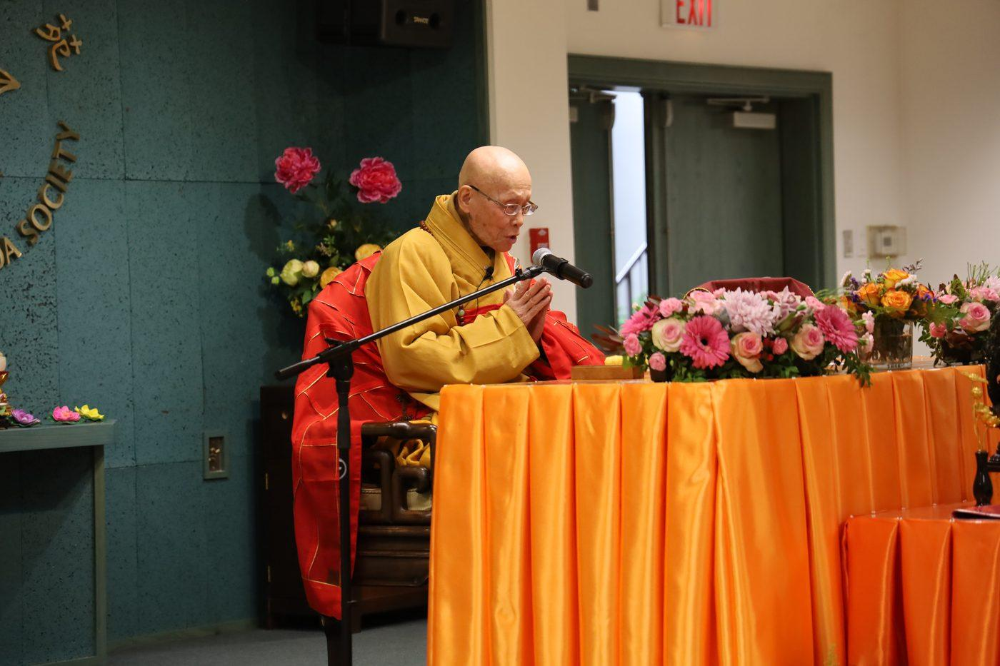
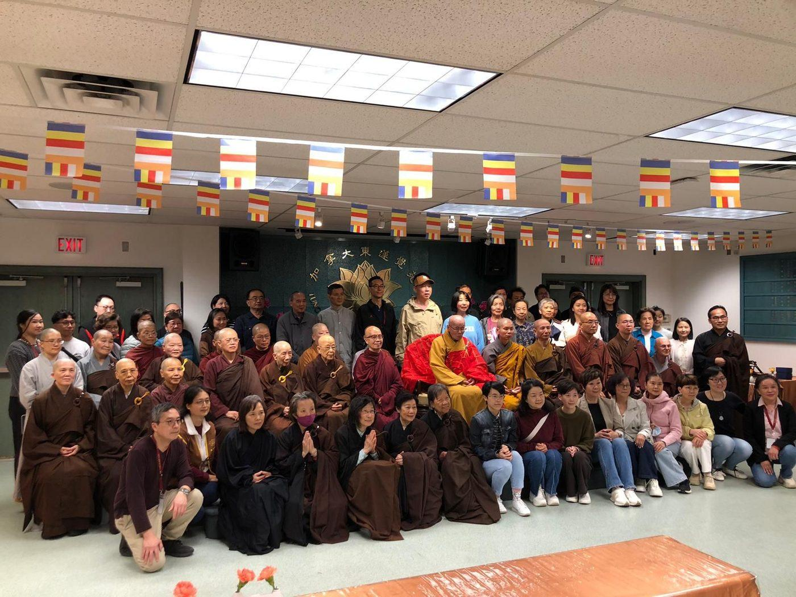
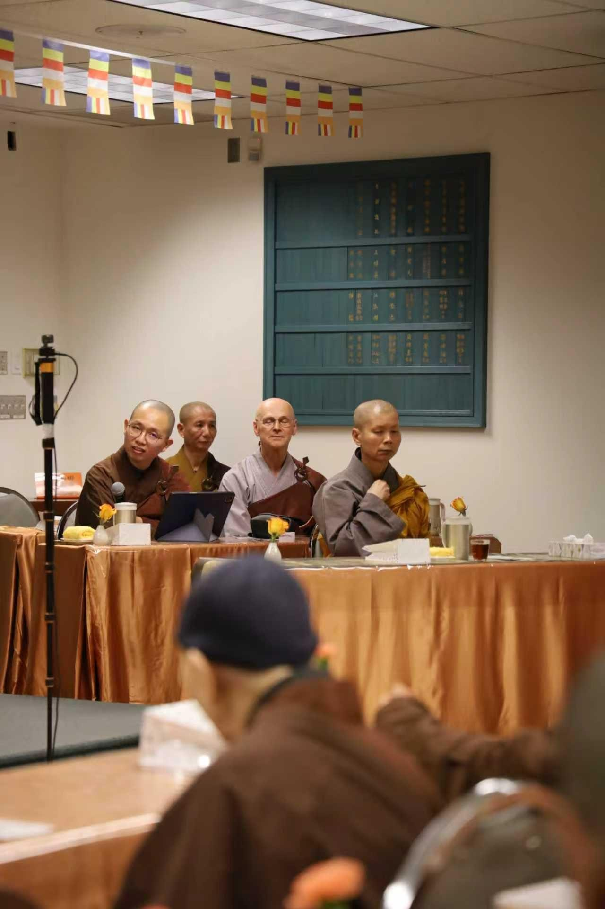
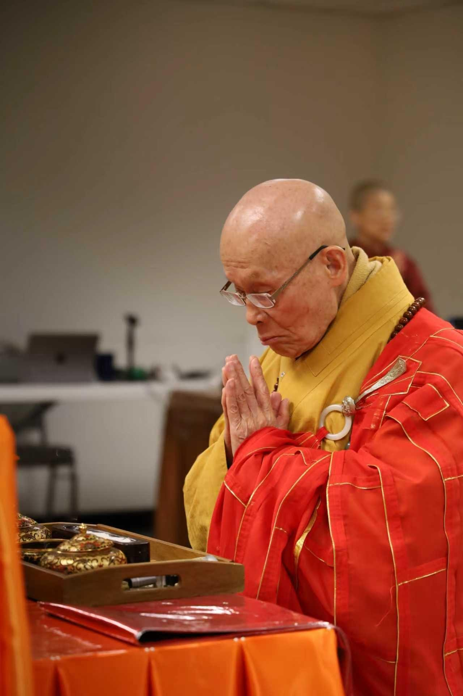
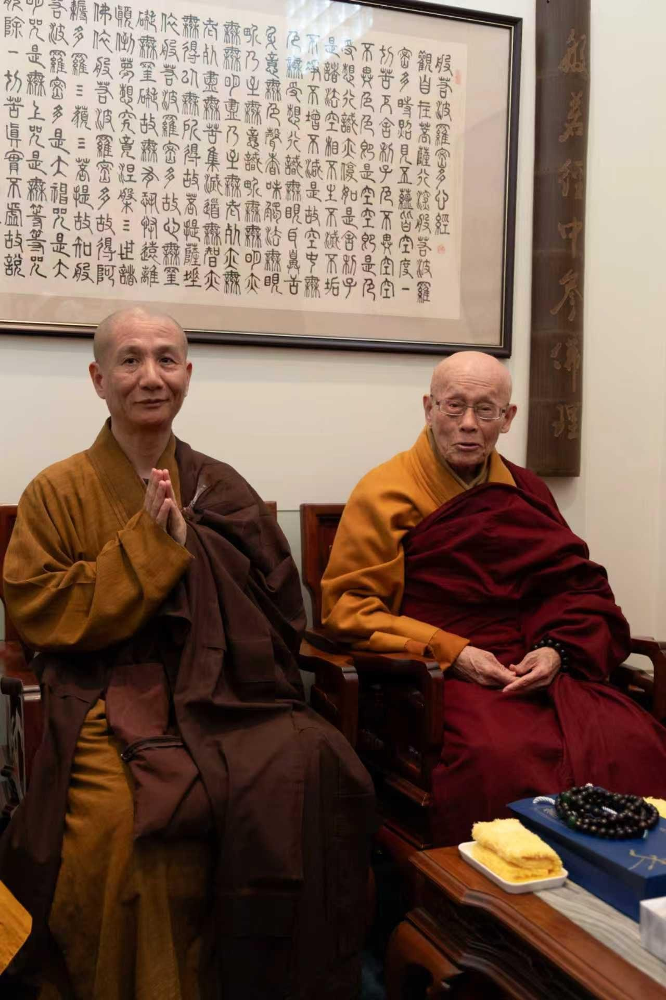
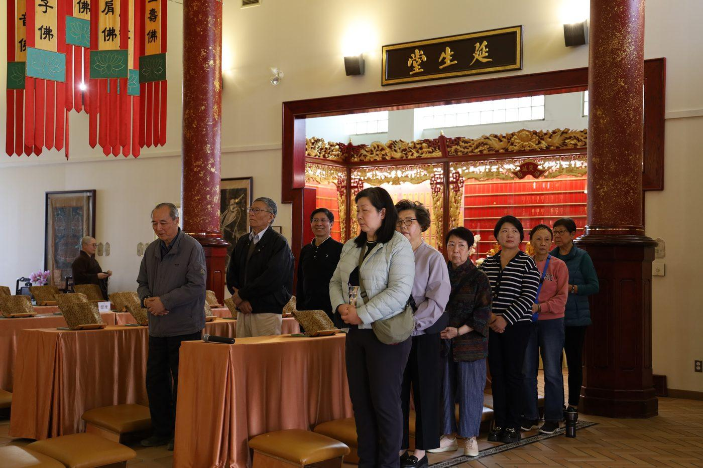
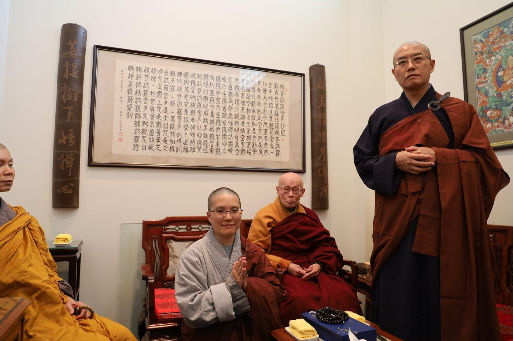
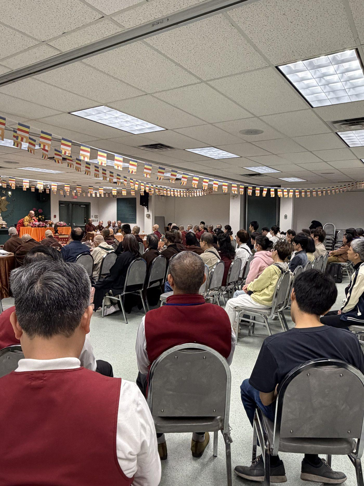
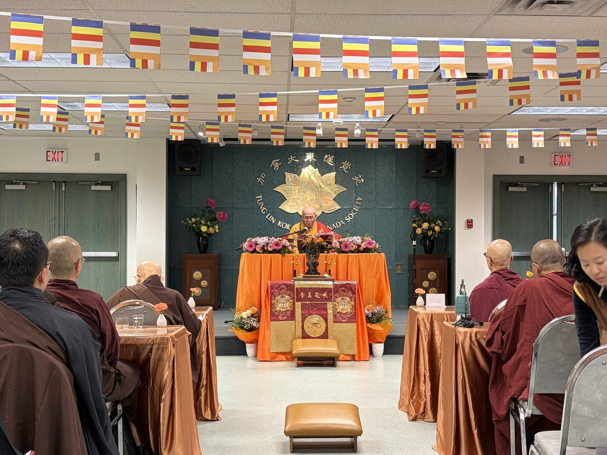
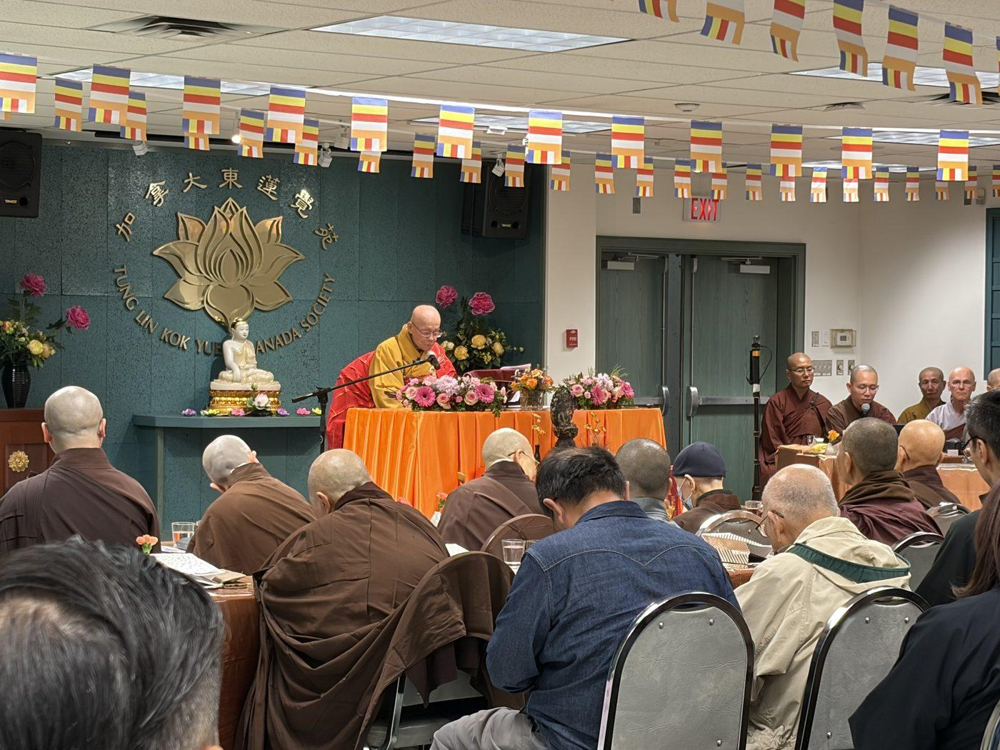
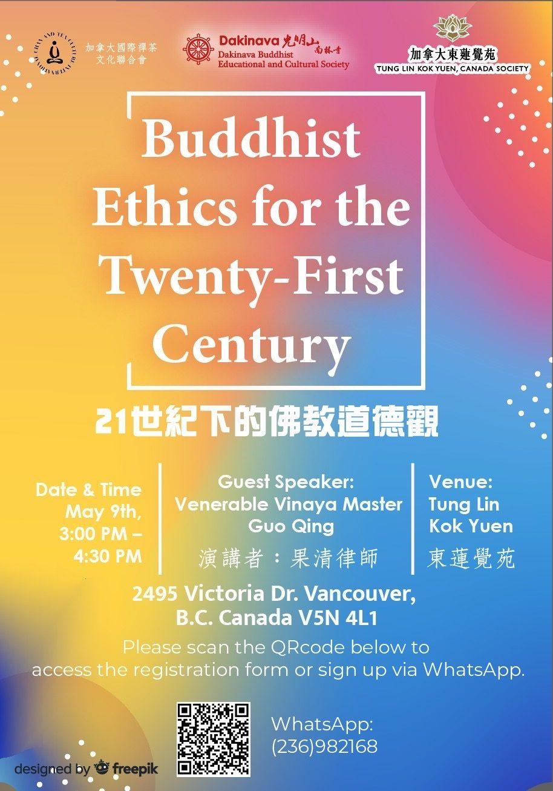
Chan and Tea Culture International promotes Chan — the Chinese Buddhist Chan school — and Chinese tea culture. Through tea, the association offers a way into stillness, compassion and harmony: a quiet bowl of tea, shared with others, can help the mind settle, open the heart, and bring people together in peace.